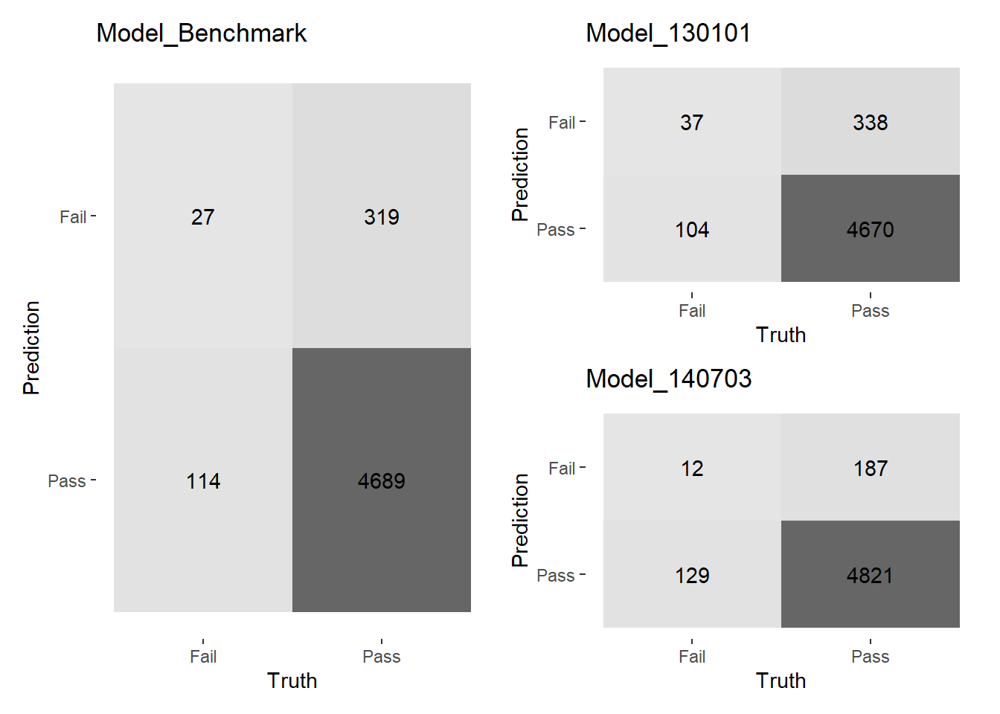

# tidyverse
library(tibble)
library(dplyr)
library(purrr) # FP toolkit，以map()、modify()取代for-loop
library(tidyr) # reshape data
# tidymodels
library(parsnip) # predict
library(yardstick) # estimate model performance
# ggplot2
library(ggplot2)
library(patchwork) # combine separate ggplots into the same graphicBPI Model Improvement
Code Structure
Introduction
本程式檔執行內容如下：
- Import：引入已配適資料的模型。
- Predict：以集成方法預測測試集樣本結果（是否為不合格報單）。
- Evaluate：評估集成模型表現，採用BPI模型年度更新主要觀察指標 F-measure 做衡量。
Package
引入所需套件
Import Models
load("data/vegetable_fit.rda")
load("data/vegetable_tes.rda")Predict
以投票法集成各模型預測結果，模型閾值先設定為 0.5
# function
ensemble_pred <- function(lst_fit, tbl_test = lst_test$test, thres = .5) {
# 各模型預測結果
lst_predrsl <- map(
.x = lst_fit,
.f = \(x) {
predict.model_fit(
object = x,
new_data = tbl_test,
type = "prob"
) %>%
{.[[".pred_Fail"]]} %>%
{ifelse(. > thres, 1, 0)}
}
)
# 投票法集成
votethres <- length(lst_fit) / 2
predrsl_ensemble <- lst_predrsl %>%
pmap_int(.l = ., .f = sum) %>%
{ifelse(.>votethres, "Fail", "Pass")} %>%
factor(levels = c("Fail", "Pass"))
return(predrsl_ensemble)
}將集成模型預測結果整理成 tibble
# execute
tbl_truthpred <- tibble(
`Truth` = lst_test$test$Y,
`Model_Benchmark` = ensemble_pred(lst_fit$all),
`Model_130101` = ensemble_pred(lst_fit$`130101`),
`Model_140703` = ensemble_pred(lst_fit$`140703`)
)- Truth：實際結果，報單查驗結果為合格（Pass）或不合格（Fail）
- Model_Benchmark：預測結果，以 2011-01-01 至 2018-12-31 資料建構之集成模型
- Model_130101：預測結果，以 2013-01-01 至 2018-12-31 資料建構之集成模型
- Model_140703：預測結果，以 2011-01-01 至 2018-12-31 資料建構之集成模型
Evaluate
confusion matrix
視覺化混淆矩陣
# function
plot_cfmx <- function(tbl_truthpred) {
truth_col <- names(tbl_truthpred)[1]
pred_cols <- names(tbl_truthpred)[c(-1)] # 取2至最後(不要元素1)
plots_cfmx <- map(
.x = pred_cols, # atomic vector
.f = \(x) {
conf_mat(
data = tbl_truthpred,
# pronouns (.data, .env) contexts is deprecated
truth = all_of(truth_col),
estimate = all_of(x)
) %>%
# create graphic
autoplot(type = "heatmap") + ggtitle(x)
}
)
# 設定list內ggplot的名稱
names(plots_cfmx) <- pred_cols
return(plots_cfmx)
}
# execute
plots_cfmx <- plot_cfmx(tbl_truthpred)以 patchwork 套件排列圖形
# layout
plots_cfmx$Model_Benchmark |
(plots_cfmx$Model_130101 / plots_cfmx$Model_140703)
metrics
計算評估指標，包含F-measure、Precision、Recall
# function
# combine metric function
multi_metric <- metric_set(f_meas, precision, recall)
# use new function and tabulate
tabulate_metrics <- function(tbl_truthpred, func = multi_metric) {
truth_col <- names(tbl_truthpred)[1]
pred_cols <- names(tbl_truthpred)[c(-1)] # 取2至最後
tbl_estimates <- map(
.x = pred_cols,
.f = \(x) func(
data = tbl_truthpred,
truth = all_of(truth_col),
estimate = all_of(x)
) %>%
select(c(".metric", ".estimate")) %>%
add_column(`.model` = x, .before = 1)
) %>%
bind_rows() %>%
# 展開指標名稱欄位
pivot_wider(names_from = ".metric", values_from = ".estimate")
return(tbl_estimates)
}
# execute
tabulate_metrics(tbl_truthpred)關於產品中分類 生鮮冷凍冷藏蔬菜 集成模型 調整資料擷取期間 之測試：
- 以 2013-01-01 後的資料訓練的模型，其 F-measure 明顯 高 於以所有資料訓練的模型； 而以 2014-07-03 後的資料訓練的模型，其 F-measure 明顯 低 於以所有資料訓練的模型。 調整資料擷取期間對於模型預測表現有相當程度影響，建議可納入BPI模型年度更新測試項目。
- 後續 放入高風險特徵 之測試，選擇以 2013-01-01 後的資料建模。